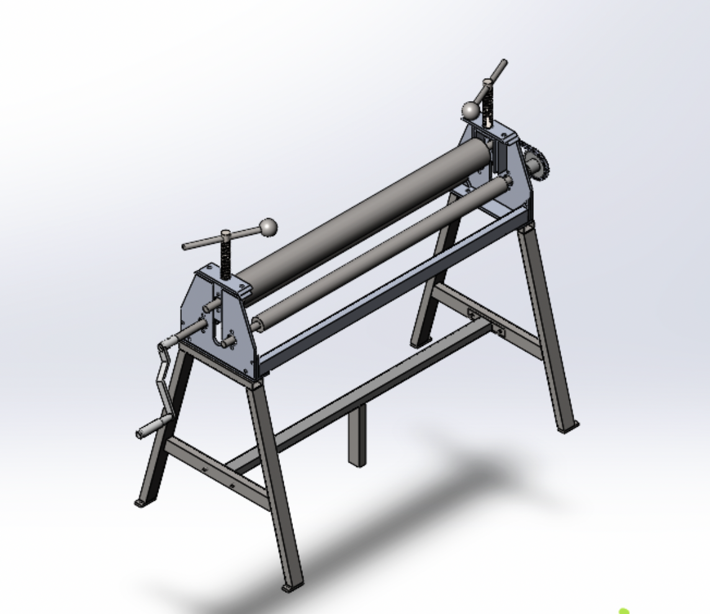
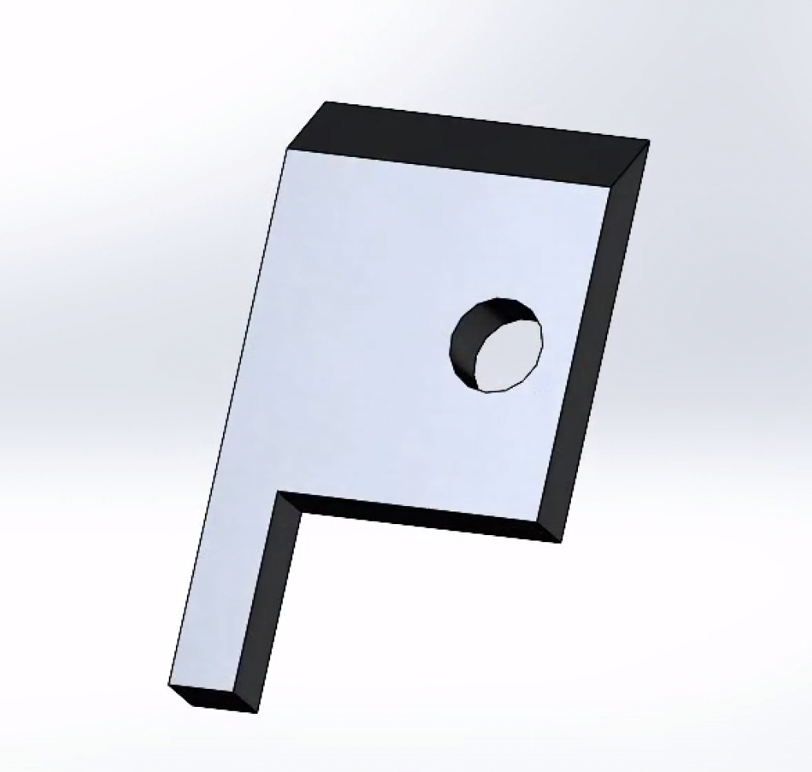
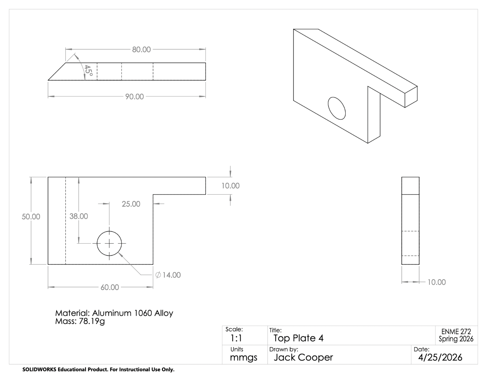
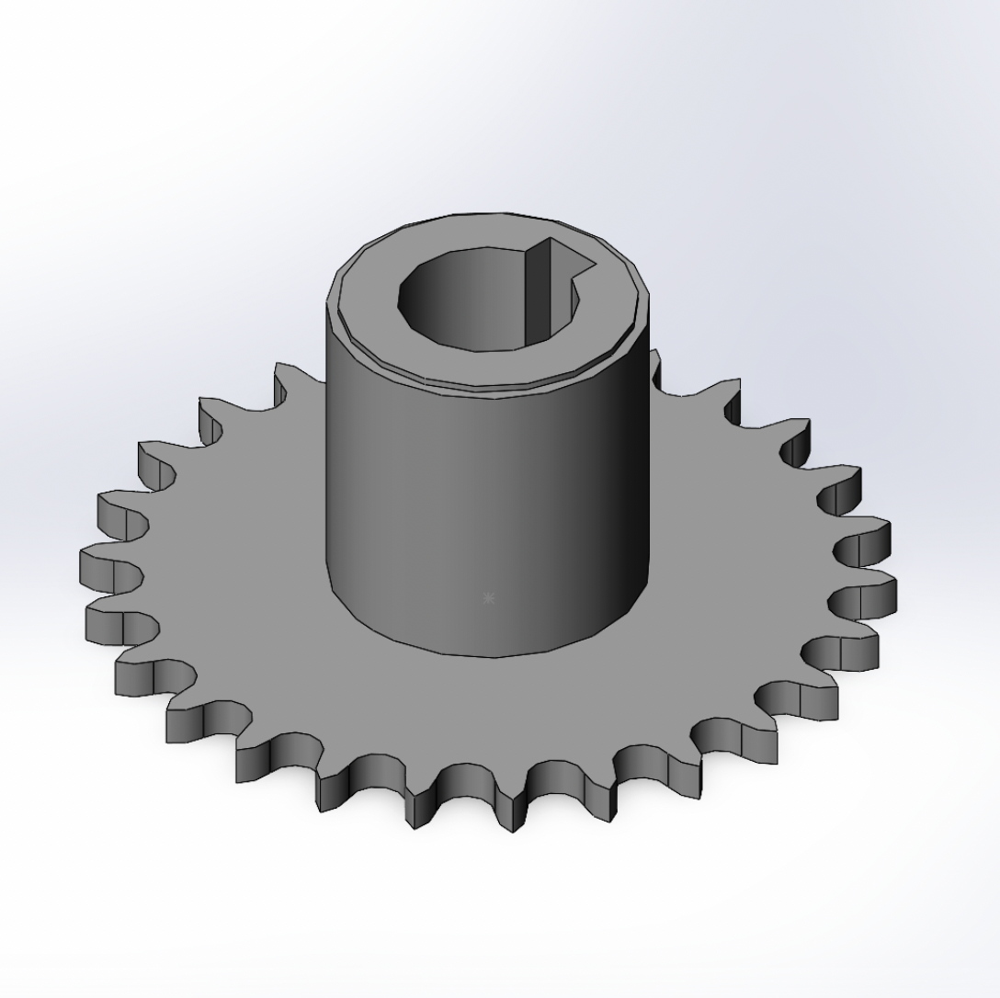
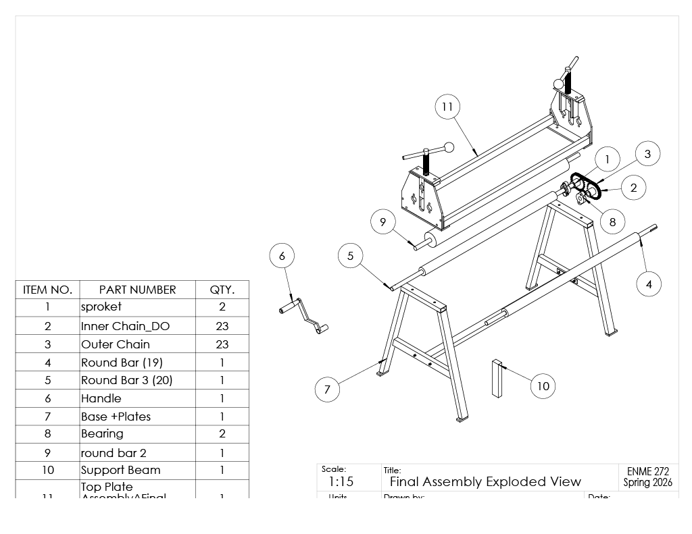
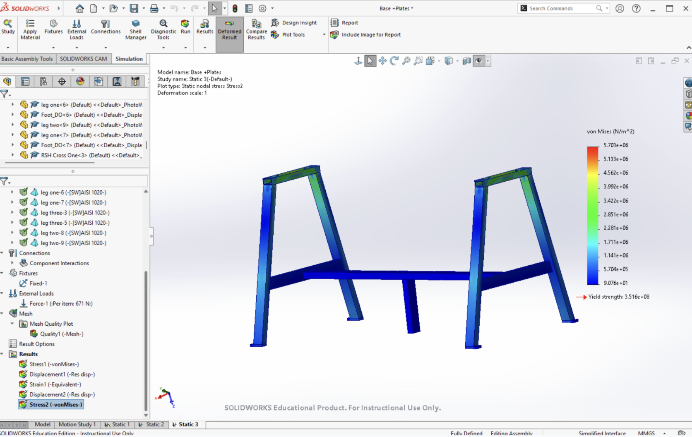

Sheet Metal Roller
A mechanical assembly of 30 unique parts, designed and modeled in SolidWorks — one of the more complex systems I've worked on.

Full assembly — SolidWorks render
Overview
What this project was
The sheet metal roller is a mechanical assembly made up of 30 unique parts, all designed and modeled individually in SolidWorks. Besides modeling single components, the project required thinking about the assembly as a whole system. I needed to know how each part needed to fit, move, or connect relative to the others.
Objective
Goal of the design
The guidelines of the project required 30 unique parts that were all assembled together to create a cohesive system. Additionally, the assembly needed to have linear and circular motion that could be modeled through SolidWorks' animation software. Additionally, I had to make sure that the system would work in real life through the use of FEA analysis on different parts of the assembly. I chose a sheet metal roller because I felt it was a good way to show motion while also having interesting parts to model.
Design Process
Approach
Designing a system with this many interacting parts meant working through the assembly deliberately rather than modeling components in isolation. As a result, the system was split up into different subassemblies: handle, drive train, base, and plates. This way, the daunting goal of assembling 30 parts got simplified into 4 subassemblies. These subassemblies would then be put together to make up the whole system. After the system was assembled, FEA and animation analysis could be run.
CAD & Modeling
Modeling the parts
Each of the roller's 30 components was modeled individually in SolidWorks. The models were largely based on other CAD drawings of sheet metal rollers found on the internet. However, I often had to use creative liberties where the source documents didn't have accurate measurements or details. In SolidWorks, various tools and features were used in order to model the complex parts. For example, bolts were made by using the thread tool so that they could accurately fit into a hole. Additionally, the chain links were created with the chain tool in order to exactly fit them around two sprockets in the drive train subassembly. The dimensions and designs of each part had to be constantly altered to allow a seamless fit during the assembly portion of the project.
Base Plate

CAD model

Engineering drawing
Sprocket

CAD model

Engineering drawing
Assembly
Bringing it together
With the individual parts modeled, the next step was assembling them into a single functioning system. I had to check that components interacted correctly and that the assembly could be built the way it was designed. Most of the parts and subassemblies were easily mated together using basic tools like coincident and parallel mates. The drive train was especially difficult, though, as it required movement of the chain, sprockets, handle, and round bars of the assembly. To do this, I utilized the gear mate in order for the chain to move the sprockets in a realistic fashion.

Exploded assembly view
Engineering Decisions
Key decisions along the way
- One specific design decision that I made was the material that each part should be made out of. To do this, I ran an FEA analysis using different materials to determine what the base or the plates should be made out of to ensure success if the model was to be manufactured. In the end, most of the parts were chosen to be made of AISI 1020 steel with the supporting plates made of aluminum to lower weight.
- One design constraint that I had to consider was the manufacturability of the design. Special consideration was taken to make sure each part could fit together easily and the assembly itself could stand under its own weight. Measurements and drawings were used that could be followed in real life if someone actually wanted to construct it.
- One trade-off that I considered was whether or not I wanted to include screws or bolts for the mating of every part. I ultimately decided to not include them because I felt that it would make the assembling more complicated and was not a skill that needed to be shown off.

FEA analysis of base
Challenges
What was difficult
One major challenge that I ran into was during the assembling process. The reference that our system was based around did not detail how each part would fit together in each subassembly. Additionally, many of the measurements of the reference did not allow for a seamless match between each part. Consequently, I had to use trial and error to determine the correct measurements and order that each part should have. This was the most frustrating and painstaking part of the entire project.
Final Design
The completed assembly
The final assembly met all of the original objectives set at the start of the project. The sheet metal roller included exactly 30 unique parts that fit together to create one system. The drive train allowed for circular and linear motion, from the spinning of the handle to each chain link moving around the sprockets. Additionally, the final model allowed for real manufacturability and realistic dimensions and drawings for anyone to follow.
Final Presentation
Final assembly video
A short animation of the completed assembly, showing how the components fit and move together with linear and circular motion.
Specifications
At a glance
What I Learned
Takeaways
Working through a 30-part assembly reinforced how much of mechanical design happens at the system level, not just the part level. I was forced to think about how components interact, which is a different skill from modeling any one part well. In addition, I gained an understanding of the importance that accurate measurements and drawings can have when trying to use a reference. Through this project, I got an insight into what professional CAD designers must do to create accurate models for their company's products.